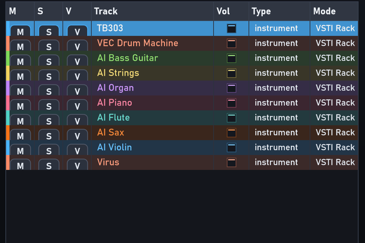
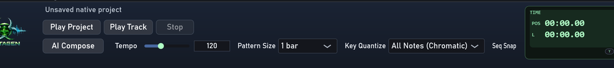
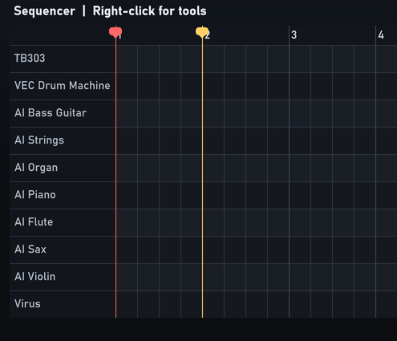

1. Add or select a track
Create an instrument or sample track, then load a bundled or third-party VST3 plugin when you need a synth, sampler, or drum source.
Desktop AI music workstation
Mutagen is a native C++ music production app for MIDI-first workflows. It combines a desktop sequencer, piano roll editor, live VST3 hosting, bundled synths and instruments, sample tools, automation, and AI-assisted composition in a standalone Windows-ready workstation.
Features
Arrange pattern clips, edit notes in the piano roll, and shape controller data in a dedicated desktop music production workflow.
Run bundled and third-party VST3 instruments with shared playback and editor instances so parameter changes affect the live engine immediately.
Use native AI composition features plus log inspection and HTTP diagnostics when tuning prompts or debugging music generation output.
Download packaged Windows builds from GitHub Releases or build the JUCE desktop app locally from this repository.
Start with the included VST3 instrument set, including Virus Synth and a growing bundled collection for synth, drum, and sampled sounds.
Mutagen is now focused on the supported native app path rather than the earlier Python prototype, packaging shell, or bridge tooling.
Screenshots




Help
Create an instrument or sample track, then load a bundled or third-party VST3 plugin when you need a synth, sampler, or drum source.
Use the desktop sequencer to draw pattern blocks at the current pattern size, then open them directly in the piano roll for note editing.
Use the piano roll for notes and the lower pane for velocity, MIDI CC, and automation-style controller editing inside the same music workflow.
Use Edit VST or the track V toggle to open the live plugin editor. Parameter moves apply straight to the running engine.
Use the mixer, locator handles, pattern tools, and floating windows to arrange the song structure and balance the session.
Export stems or track renders, then inspect the activity log and AI HTTP debug log when diagnosing AI-assisted composition output.
Flagship Instrument

Virus Synth is the most detailed bundled instrument in the rack. It includes shared oscillator controls, modulation and matrix pages, dual filters, FX pages, a shift layer, and preset browsing through the LCD and OSD workflow.
Release
powershell -ExecutionPolicy Bypass -File .\scripts\build_windows_release.ps1 -ReleaseVersion v0.3.2The packaging script builds the native app, copies the bundled VST3 instruments, and creates a portable ZIP containing Mutagen.exe.
git tag v0.3.2
git push origin main --tagsPushing a v* tag triggers the native Windows release workflow and publishes the ZIP, installer, and SHA256 checksums to GitHub Releases.
Compatibility
Mutagen targets VST3 plugin hosting for the supported native desktop workflow.
The automated release pipeline currently ships the native Windows build and installer for desktop music production use.
The portable package includes the bundled VST3 instrument set from the plugins/AdvancedVSTi submodule.
For build steps, packaging notes, workflow help, and release details, read the README and help guide.